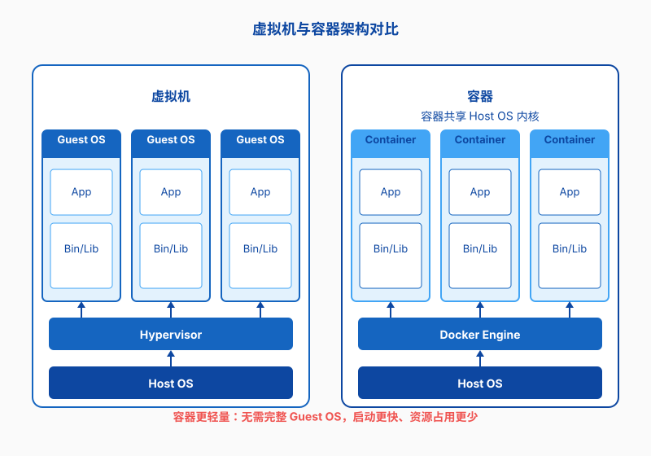
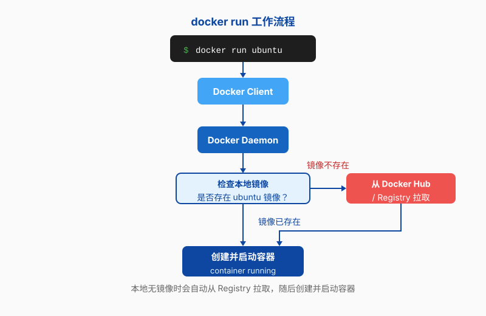
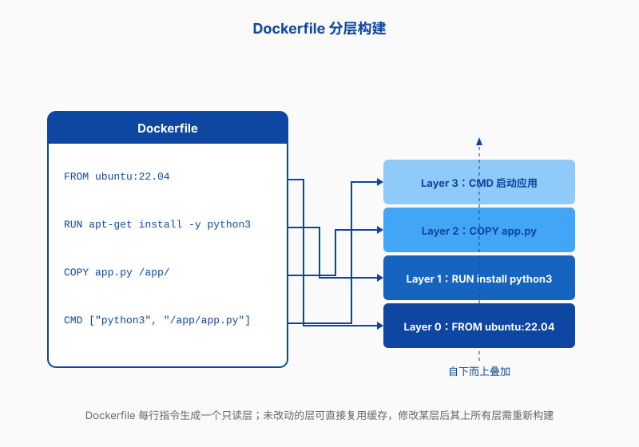

第九章 Docker
前面几章，你已经学会了登录 Linux、管理文件、装软件、配网络。但当你真正开始跑实验，很可能会遇到一个比“命令行不会用”更隐蔽的敌人：环境不一致。同样的代码，在你的笔记本上能跑，在实验室的工作站上就报错；同门师兄去年复现出来的结果，你今年怎么调都差一截；PyTorch 版本、CUDA 版本、Python 依赖互相打架，最后你只能把系统重装一遍。
Docker 就是来解决这类问题的。它把“程序和它需要的一切”打包成一个可以搬来搬去的集装箱，让你在哪台机器上都能复现出同样的环境。这一章我们就从科研中真实的痛点出发，看看 Docker 是什么、怎么用，以及怎么用它搭建 AI 训练、Jupyter notebook、多人协作的科研环境。
为什么科研要用 Docker？
先别急着安装。我们先用两分钟聊聊，为什么做科研的人会被环境问题折磨成这样。
当环境不一致成为日常
做材料和 AI 研究，很少只用一台电脑。你的笔记本负责写代码和看论文，实验室工作站负责小规模实验，集群或云服务器负责大规模训练。每台机器的操作系统版本、已装软件、环境变量都可能不同。
更麻烦的是，科研代码往往“活”很长时间。一篇文章从投稿到审稿再到代码开源，可能过去一两年。期间 Python、NumPy、PyTorch 都升级了好几轮。审稿人按照你论文里的说明复现实验，第一步 pip install 就失败了——这种场景一点都不罕见。
你可能还遇到过这种情况：课题组新买的 GPU 服务器装的是 Ubuntu 24.04，而你的旧代码在 Ubuntu 20.04 上才稳定。你不敢乱改系统，因为其他同学也在用这台机器。Docker 的好处就是，你不用动宿主系统，也能跑一个 Ubuntu 20.04 的“小环境”。
版本地狱：一个 PyTorch/CUDA 的故事
做深度学习的人，几乎都踩过 PyTorch 和 CUDA 的版本坑。PyTorch 有 CPU 版、CUDA 11.8 版、CUDA 12.1 版；CUDA 版本又要和显卡驱动匹配；显卡驱动版本太新或太旧，都会导致训练脚本直接崩溃。
假设你正在复现一篇论文，仓库 materials-gnn-lab/example-gnn 的 README 写着：
student@workstation:~$ pip install torch==1.12.1+cu116
你照做了，结果启动训练时看到一行：
RuntimeError: CUDA error: no kernel image is available for execution on the device
这句话的意思是，你编译好的 CUDA 内核和当前显卡架构不匹配。原因可能是你的显卡比作者新，也可能是驱动和 CUDA 工具链不配套。要排查这种问题，常常需要反复重装驱动、换 PyTorch 版本、清理 .pyc 和缓存。
如果用 Docker，作者可以直接把一个“能跑通”的镜像推送到镜像仓库。你拉下来运行，里面 PyTorch、CUDA、驱动依赖都已经配好。你只需要关心代码和实验本身，而不是把时间耗在调环境上。
Docker 是什么：集装箱比喻
Docker 的名字来源于英国码头工人装卸集装箱的场景。在集装箱出现之前，货物形状各异，装卸、转运、堆放都很麻烦。集装箱标准化之后，轮船、卡车、起重机都按同一个尺寸对接，全球物流效率大幅提升。
从码头集装箱到软件集装箱
Docker 做的事情，就是把软件和它依赖的运行环境一起装进一个标准化的“箱子”。这个箱子里有操作系统的基础文件、程序代码、运行库、环境变量，甚至启动命令。无论你把箱子搬到哪台机器上，只要那台机器能运行 Docker，箱子里的程序就能以同样的方式启动。
对科研来说，这意味着你可以把“能复现实验的环境”本身当成一个 deliverable（可交付物）。论文投稿时附上一个镜像链接，审稿人或读者就不用再猜你的环境里到底装了什么。
虚拟机与容器的区别
听到“把环境打包搬走”，你可能会想到虚拟机。虚拟机确实也能做到环境隔离，但方式和容器很不一样。虚拟机要在宿主机上模拟一整套硬件，每台虚拟机都需要一个完整的操作系统，启动慢、占用资源多。
容器则共享宿主机的 Linux 内核，只打包应用和必要的用户空间文件。它更轻量，启动通常只要几秒，占用的内存和磁盘也小得多。一台普通服务器上跑十几个容器很常见，但跑十几个虚拟机就吃力多了。

当然，容器也不是万能的。因为它共享宿主机内核，隔离强度不如虚拟机。如果你的场景对安全性要求极高，比如多租户云服务，可能需要虚拟机或更安全的容器运行时。但对大多数科研环境来说，Docker 的隔离程度已经够用。
Docker 的三个核心概念
用 Docker 之前，先记住三个词：镜像、容器、仓库。
- 镜像（Image）：只读的模板，类似一个装好了系统的硬盘快照。比如
ubuntu:22.04镜像就是一个最小化的 Ubuntu 22.04 环境。 - 容器（Container）：镜像运行起来的实例。你可以从同一个镜像启动多个容器，每个容器都有自己的文件系统、进程空间和网络接口。
- 仓库（Registry）：存放镜像的地方。Docker Hub 是最公开的仓库，实验室也可以搭建私有仓库。
打一个比方：镜像像是唱片，容器像是播放中的音乐，仓库像是唱片店。你可以买一张唱片（拉取镜像），在家播放（运行容器），也可以自己录制一张唱片（构建镜像）放到店里卖（推送到仓库）。
安装 Docker 并运行第一个容器
讲了这么多“为什么”，现在我们来真正装一个 Docker，跑一个容器。
在 Ubuntu/Debian 上安装
本书前面一直用 Ubuntu/Debian 系作为默认例子，Docker 的安装也不例外。推荐使用官方仓库安装，这样版本比较新。下面是一套在 Ubuntu 22.04 上常用的安装步骤：
student@workstation:~$ sudo apt update
student@workstation:~$ sudo apt install ca-certificates curl gnupg
student@workstation:~$ sudo install -m 0755 -d /etc/apt/keyrings
student@workstation:~$ curl -fsSL https://download.docker.com/linux/ubuntu/gpg | \
sudo gpg --dearmor -o /etc/apt/keyrings/docker.gpg
student@workstation:~$ echo \
"deb [arch=$(dpkg --print-architecture) signed-by=/etc/apt/keyrings/docker.gpg] \
https://download.docker.com/linux/ubuntu $(. /etc/os-release && echo "$VERSION_CODENAME") stable" | \
sudo tee /etc/apt/sources.list.d/docker.list > /dev/null
student@workstation:~$ sudo apt update
student@workstation:~$ sudo apt install docker-ce docker-ce-cli containerd.io docker-buildx-plugin docker-compose-plugin
如果你用的是 Debian，把上面命令里的 ubuntu 换成 debian 即可。Fedora、CentOS、RHEL 用户可以用 dnf 安装 docker-ce，Arch Linux 用户用 pacman -S docker。细节可参考 Docker 官方文档，这里不再展开。
安装完成后，建议把当前用户加入 docker 组，这样不用每次都用 sudo：
student@workstation:~$ sudo usermod -aG docker $USER
student@workstation:~$ newgrp docker
注意：加入 docker 组相当于获得了很高的权限，因为容器可以访问宿主机资源。在多人共享的服务器上要谨慎操作。
运行第一个容器
装好之后，跑一个最经典的“Hello World”容器，验证 Docker 是否正常工作：
student@workstation:~$ docker run hello-world
Unable to find image 'hello-world:latest' locally
latest: Pulling from library/hello-world
...
Hello from Docker!
This message shows that your installation appears to be working correctly.
如果一切正常，你会看到一段欢迎文字。这个容器只做一件事：打印这段文字，然后退出。它的价值在于帮你确认 Docker 守护进程、镜像拉取、容器运行这一整条链路都是通的。
docker run 背后发生了什么
输入 docker run hello-world 后，Docker 其实做了好几件事。理解这个流程，后面排错会轻松很多：
- Docker 客户端把命令发给 Docker 守护进程。
- 守护进程检查本地有没有
hello-world镜像；没有就去 Docker Hub 拉取。 - 根据镜像创建一个新容器。
- 在容器里执行镜像预设的启动命令。
- 把输出传回终端，容器退出。

这里有一个细节：容器是“一次性”的。它退出后并没有被删除，只是停止了。下次你可以用 docker start 重新启动它，也可以用 docker rm 彻底删掉。如果希望容器运行结束后自动删除，可以加 --rm 参数。
镜像与容器的基本操作
Hello World 只是热身。接下来我们看看怎么管理镜像和容器，这是日常用 Docker 最频繁的操作。
镜像：只读模板
镜像可以从仓库拉取，也可以自己构建。拉取镜像用 docker pull：
student@workstation:~$ docker pull ubuntu:22.04
22.04: Pulling from library/ubuntu
...
Status: Downloaded newer image for ubuntu:22.04
注意镜像名后面的 :22.04 是标签（tag）。如果不写标签，默认是 latest。但 latest 会随时间变化，科研环境建议显式指定版本标签，比如 ubuntu:22.04 或 python:3.10-slim，这样环境才稳定可复现。
查看本地已有的镜像：
student@workstation:~$ docker images
REPOSITORY TAG IMAGE ID CREATED SIZE
ubuntu 22.04 a8780b506fa4 3 weeks ago 77.8MB
hello-world latest d2c94e258dcb 6 months ago 13.3kB
容器：运行中的实例
从镜像启动一个交互式容器，可以用 -it 参数。这样你就能像登录一台新机器一样，在容器里敲命令：
student@workstation:~$ docker run -it ubuntu:22.04 bash
root@f3a8b2c1d4e5:/# cat /etc/os-release
PRETTY_NAME="Ubuntu 22.04.5 LTS"
root@f3a8b2c1d4e5:/# exit
这里的 -i 表示保持标准输入打开，-t 分配一个伪终端。两个一起用，才能给你像 SSH 一样的交互体验。
容器退出后，用 docker ps 看不到它，因为 docker ps 默认只显示运行中的容器。想看所有容器，包括停止的：
student@workstation:~$ docker ps -a
CONTAINER ID IMAGE COMMAND CREATED STATUS NAMES
f3a8b2c1d4e5 ubuntu:22.04 "bash" 2 minutes ago Exited (0) 1 minute ago hopeful_fermi
常用命令一览
下面这张表列出了日常最高频的命令。先混个脸熟，用多了自然就记住了。
| 命令 | 作用 |
|---|---|
docker pull 镜像名 |
从仓库拉取镜像 |
docker images |
列出本地镜像 |
docker run 镜像名 |
从镜像启动容器 |
docker ps |
查看运行中的容器 |
docker ps -a |
查看所有容器 |
docker start 容器名 |
启动已停止的容器 |
docker stop 容器名 |
停止运行中的容器 |
docker rm 容器名 |
删除容器 |
docker rmi 镜像名 |
删除镜像 |
docker exec -it 容器名 bash |
进入运行中容器的 shell |
日志与清理
容器运行久了，日志和临时文件会占满磁盘。查看容器日志用 docker logs：
student@workstation:~$ docker logs 容器名
清理停止的容器和无用镜像可以用下面两条命令，但执行前要确认没有重要数据在容器里：
student@workstation:~$ docker container prune
student@workstation:~$ docker image prune
Dockerfile：定制自己的环境
拉取别人的镜像很方便，但科研环境往往需要自己装特定的库、改配置、放数据。这时就需要 Dockerfile：一个文本文件，描述如何从零构建一个镜像。
从 Dockerfile 构建镜像
Dockerfile 里每一条指令对应镜像的一层。常见指令包括：
FROM：指定基础镜像。RUN：执行命令，安装软件。COPY：把本地文件复制到镜像里。WORKDIR：设置工作目录。CMD或ENTRYPOINT：设置容器启动时默认执行的命令。
假设我们要为课题组构建一个用于材料数据分析的 Python 环境，Dockerfile 可以这样写：
FROM python:3.10-slim
WORKDIR /app
RUN apt-get update && apt-get install -y \
build-essential \
git \
&& rm -rf /var/lib/apt/lists/*
COPY requirements.txt .
RUN pip install --no-cache-dir -r requirements.txt
COPY . .
CMD ["python", "main.py"]
把这个文件命名为 Dockerfile，放在项目根目录，然后执行：
student@workstation:~/example-project$ docker build -t example-lab/materials-env:1.0 .
本章中的 example-lab/... 均为示例命名空间，并非真实镜像仓库，实际使用时请换成你自己的仓库名。
这里的 -t 给镜像打标签，格式通常是 用户名/仓库名:版本。点号 . 表示 Dockerfile 在当前目录。
分层构建
Dockerfile 的一个重要特性是分层。每一条 RUN、COPY、ADD 指令都会创建一个新层。多层叠加，就构成了完整的镜像。
分层有两个好处。第一，缓存复用：如果某一层没有变化，Docker 可以直接用缓存，不用重新执行。第二，镜像共享：多个镜像可以共用相同的基础层，节省磁盘空间。

基于这个特性，写 Dockerfile 时要尽量把变化少的指令放在前面。比如先 COPY requirements.txt 再安装依赖，这样只有依赖变化时才重新装包；代码变化只会触发最后的 COPY . . 层。
一个科研环境示例
下面是一个更贴近 AI 训练场景的 Dockerfile。它基于 PyTorch 官方镜像，再装上课题组常用的包：
FROM pytorch/pytorch:2.1.0-cuda12.1-cudnn8-runtime
WORKDIR /workspace
RUN pip install --no-cache-dir \
numpy==1.24.3 \
pandas==2.0.3 \
scikit-learn==1.3.0 \
matplotlib==3.7.2 \
jupyterlab==4.0.5
COPY train.py /workspace/
COPY data/ /workspace/data/
EXPOSE 8888
# 示例环境允许以 root 启动 JupyterLab；生产环境请按后文创建普通用户运行
CMD ["jupyter", "lab", "--ip=0.0.0.0", "--port=8888", "--no-browser", "--allow-root"]
注意最后一条 CMD 启动了 JupyterLab，并监听所有网络接口的 8888 端口。第七章讲过，端口是网络服务的门牌号；第八章讲过，HTTP 请求通过端口进入服务。这里的 EXPOSE 8888 只是声明，真正要把端口映射到宿主机，还需要在 docker run 时用 -p 参数。
基础镜像的选择
选基础镜像时，体积和确定性要权衡。python:3.10-slim 比 python:3.10 小很多，适合不依赖系统库的脚本。pytorch/pytorch 系列已经预装 CUDA，适合 GPU 训练，但体积巨大。不要贪图 latest 标签，科研环境最好锁定具体版本号。
数据持久化与端口映射
容器有一个特点：默认情况下，容器里创建的文件会随容器删除而消失。这对科研来说是个大问题——你跑了一天的实验，结果存在容器里，手一抖把容器删了，数据也没了。所以必须学会数据持久化和端口映射。
数据卷
最常用的是挂载数据卷（volume），把宿主机的目录映射到容器里。这样容器可以读写宿主机上的文件，即使容器被删，数据还在。
student@workstation:~$ docker run -it -v /home/student/experiments:/workspace/data ubuntu:22.04 bash
这条命令把宿主机的 /home/student/experiments 目录挂载到容器的 /workspace/data。你在容器里对 /workspace/data 的任何修改，都会直接反映到宿主机上。
也可以用 Docker 管理的命名卷：
student@workstation:~$ docker volume create project-data
student@workstation:~$ docker run -it -v project-data:/workspace/data ubuntu:22.04 bash
命名卷由 Docker 自动管理路径，适合数据库或需要长期保留的数据。但科研代码和实验结果通常建议用绑定挂载，也就是第一种方式，这样你能直接看到文件在哪。
端口映射
容器里的服务监听某个端口，但默认情况下外部访问不到。要把容器端口暴露给宿主机，用 -p 宿主机端口:容器端口。这和第七章讲的端口概念一脉相承：容器内部有自己的端口空间，-p 参数就是在宿主机和容器之间做了一次端口转发。
student@workstation:~$ docker run -p 8888:8888 example-lab/materials-env:1.0
运行后，打开浏览器访问 http://localhost:8888，就能看到 JupyterLab 界面。这里的 localhost 指的是宿主机。如果宿主机是远程服务器，你还需要像第八章讲的那样，通过 SSH 隧道或反向代理把端口暴露到你本地的浏览器。
如果一台服务器上多个同学都要跑 Jupyter，就要避免端口冲突。可以用 -p 8889:8888、-p 8890:8888 这样的方式，把每个人容器里的 8888 映射到宿主机的不同端口。
容器之间的网络
多个容器之间经常需要通信。比如一个容器跑数据库，一个容器跑 Web 服务，一个容器跑训练脚本。Docker 提供了几种网络模式，默认是 bridge 模式。同一 bridge 网络里的容器可以用容器名互相访问。
student@workstation:~$ docker network create lab-net
student@workstation:~$ docker run -d --name postgres-db --network lab-net postgres:15
student@workstation:~$ docker run -d --name web-app --network lab-net -p 8080:8080 example-lab/web-app:1.0
在 web-app 容器里，可以用 postgres-db 这个主机名访问数据库容器。Docker 会自动完成 DNS 解析，你不用记 IP 地址。
Docker Compose：多容器编排
当项目需要同时跑好几个容器，手动敲 docker run 会越来越繁琐。Docker Compose 用一个 YAML 文件描述所有容器，一条命令就能启动整个环境。
为什么需要 Compose
想象你要为课题组搭一个完整的实验平台：一个 PostgreSQL 数据库存放材料数据，一个 Redis 缓存中间结果，一个 JupyterLab 供同学写代码，一个训练服务定时跑模型。每个容器都有自己的镜像、端口、挂载卷、环境变量。如果靠手动命令启动，很容易漏参数、错端口。
Compose 把这些配置写进一个 docker-compose.yml 文件，版本控制、分享、复现都变得简单。
docker-compose.yml 示例
下面是一个虚构的课题组平台配置：
version: "3.9"
services:
db:
image: postgres:15
environment:
POSTGRES_USER: labuser
POSTGRES_PASSWORD: labpass2024
POSTGRES_DB: materials
volumes:
- pgdata:/var/lib/postgresql/data
networks:
- lab-net
jupyter:
image: example-lab/materials-env:1.0
ports:
- "8888:8888"
volumes:
- ./notebooks:/workspace/notebooks
- ./data:/workspace/data
networks:
- lab-net
depends_on:
- db
volumes:
pgdata:
networks:
lab-net:
这个文件声明了两个服务：db 和 jupyter。它们共享一个 lab-net 网络，Jupyter 容器可以通过 db 这个主机名访问 PostgreSQL。
启动与停止
在 docker-compose.yml 所在目录执行：
student@workstation:~/lab-platform$ docker compose up -d
-d 表示后台运行。启动后，可以用 docker compose ps 查看状态，docker compose logs 看日志：
student@workstation:~/lab-platform$ docker compose ps
student@workstation:~/lab-platform$ docker compose logs -f jupyter
停止整个环境：
student@workstation:~/lab-platform$ docker compose down
如果想连数据卷一起删除，可以加 -v，但一般不建议，除非你真的想清数据。
GPU 与 Docker
对 AI 研究来说，没有 GPU 的 Docker 是不完整的。Docker 本身不能直接访问显卡，需要额外安装 NVIDIA Container Toolkit。
NVIDIA Container Toolkit
NVIDIA Container Toolkit 是英伟达提供的工具，让容器能调用宿主机的 NVIDIA 显卡。安装步骤大致如下：
student@workstation:~$ curl -fsSL https://nvidia.github.io/libnvidia-container/gpgkey | \
sudo gpg --dearmor -o /usr/share/keyrings/nvidia-container-toolkit-keyring.gpg
student@workstation:~$ curl -s -L https://nvidia.github.io/libnvidia-container/stable/deb/nvidia-container-toolkit.list | \
sed 's#deb https://#deb [signed-by=/usr/share/keyrings/nvidia-container-toolkit-keyring.gpg] https://#g' | \
sudo tee /etc/apt/sources.list.d/nvidia-container-toolkit.list
student@workstation:~$ sudo apt update
student@workstation:~$ sudo apt install -y nvidia-container-toolkit
student@workstation:~$ sudo nvidia-ctk runtime configure --runtime=docker
student@workstation:~$ sudo systemctl restart docker
安装完成后，可以用 nvidia-smi 在容器里测试显卡是否可见：
student@workstation:~$ docker run --rm --gpus all nvidia/cuda:12.1.0-base-ubuntu22.04 nvidia-smi
如果输出能看到显卡型号、驱动版本和显存大小，说明 GPU 已经能被容器使用了。
运行 GPU 训练容器
跑训练脚本时，记得加上 --gpus all，否则容器看不到显卡：
student@workstation:~$ docker run --gpus all -it -v /home/student/projects:/workspace \
example-lab/gnn-train:1.0 bash
在容器里验证 PyTorch 能否识别 GPU：
root@container:/workspace$ python -c "import torch; print(torch.cuda.is_available())"
True
看到 True 才放心。如果显示 False，先检查 --gpus 参数有没有加，再检查镜像的 CUDA 版本和宿主机驱动是否兼容。
常见坑与最佳实践
Docker 能省很多事，但也有一些容易踩的坑。这里列出几个科研场景里最常见的。
镜像体积
AI 镜像动不动就几个 GB，下载和传输都很慢。减小体积的方法包括：
- 用
slim或alpine变体作为基础镜像。科学计算/GPU 镜像通常仍基于 Debian/Ubuntu，Alpine 更适合纯脚本服务。 - 一条
RUN指令里完成安装和清理，比如apt-get update && apt-get install -y ... && rm -rf /var/lib/apt/lists/*。 - 不要把训练数据、大模型权重复制进镜像，训练时用数据卷挂载。
- 用
.dockerignore文件排除不需要进入镜像的文件，比如.git、日志、缓存。
安全与权限
容器虽然隔离，但不是保险箱。下面几条建议能减少风险：
- 尽量不要以
root运行应用。Dockerfile 里可以用USER指令切换到普通用户。 - 不要把密码、API Key、私钥写进镜像或 Dockerfile。敏感信息通过环境变量或挂载文件传入。
- 只开放必要的端口，不要把内部服务监听在
0.0.0.0上。第八章讲过，暴露面越大，风险越高。 - 定期更新基础镜像，修复已知漏洞。
不要以 root 运行应用
很多官方镜像默认以 root 启动，方便调试，但不适合长期运行。一个简单的做法是在 Dockerfile 末尾创建普通用户并切换：
RUN useradd -m -u 1000 labuser
USER labuser
注意挂载卷时的文件权限问题。如果宿主机文件的所有者是 student（UID 1000），容器里也用 UID 1000 的用户，就能避免读写权限冲突。
调试技巧
容器出问题不要怕，先抓住几个常用命令：
docker logs 容器名：看标准输出和标准错误。docker exec -it 容器名 bash：进入运行中的容器排查。docker inspect 容器名：看容器的完整配置，包括挂载、网络、环境变量。docker stats：看容器实时资源占用。
如果容器一启动就退出，来不及 exec 进去，可以改启动命令为 sleep infinity 或 bash，让它先挂着，再进去手动调试。
Docker 不是银弹，但它确实把“环境配置”这件烦人的事从每个人肩上卸了下来。当你能随手启动一个带 CUDA 的 PyTorch 容器，能用一条命令复现同门的实验环境，能把代码和数据分开管理，你就已经迈过了科研工程化的一道门槛。